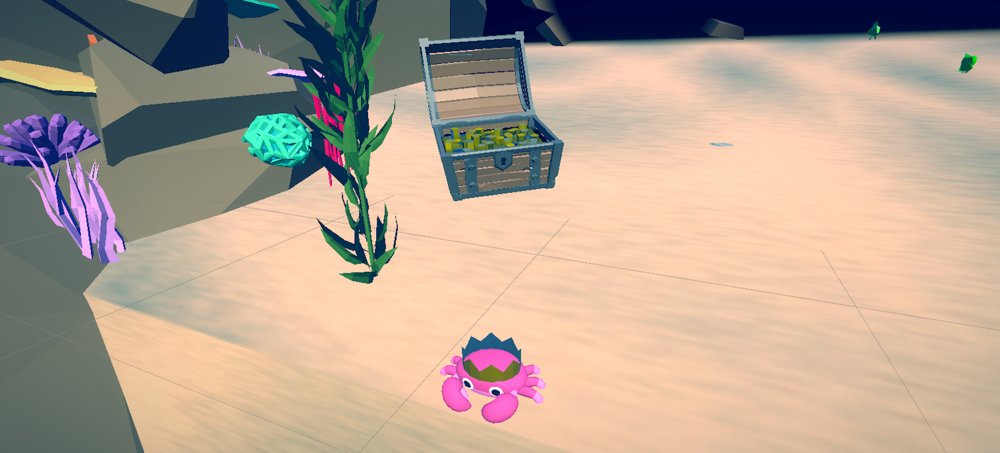

Crab
Last game in the balance pack for H'ability. The core movement in the game is the side-step. I worked on this project from the requirements gathering phase through to production.
 The player controls a crab moving along the X-axis, which follows the head movement through the VR headset. The objective is to collect green fish while avoiding red objects. Although the gameplay seems simple, I had to ensure that the player wouldn't find themselves in situations where it was impossible to dodge red objects. I also explored various ways to gamify the exercise to make it enjoyable for the patient.
The player controls a crab moving along the X-axis, which follows the head movement through the VR headset. The objective is to collect green fish while avoiding red objects. Although the gameplay seems simple, I had to ensure that the player wouldn't find themselves in situations where it was impossible to dodge red objects. I also explored various ways to gamify the exercise to make it enjoyable for the patient.
I added life to the scene with animated fish and developed a sand shader to enhance the environment. This posed some optimization challenges to ensure everything worked smoothly in VR. Additionally, I included several easter eggs in the game to surprise and reward players during their sessions. Some of them I created with Blender.
For this exercise, I collaborated closely with healthcare professionals to understand their expectations and vision for the workout. I enjoyed this aspect of the project, as it required me to communicate my work clearly and concisely, as well as adapt to the feedback provided by professionals outside the game development field.